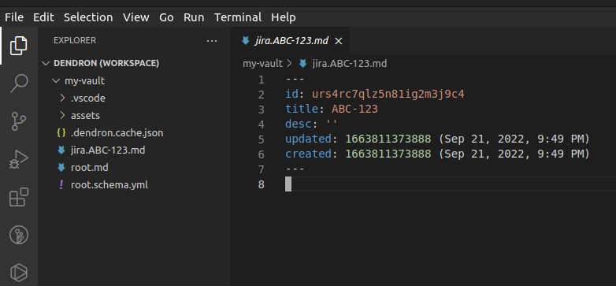
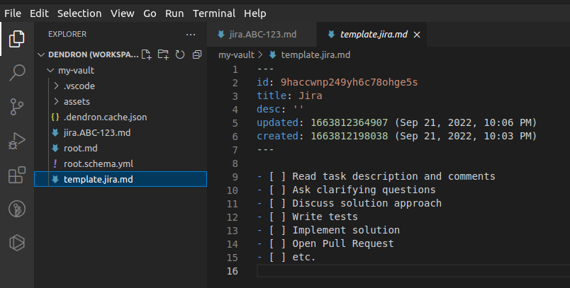
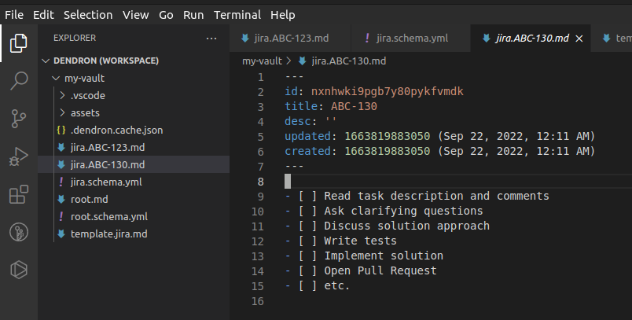
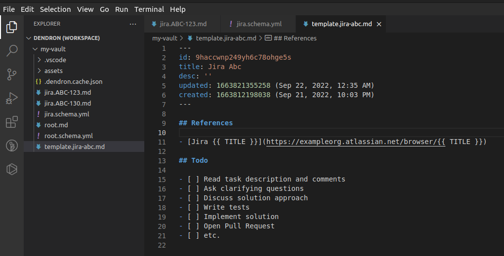
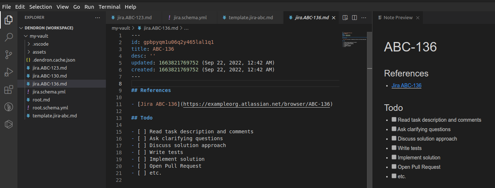

Dendron is an open source knowledge management tool that I have incorporated into my personal and professional life to capture knowledge, write journals, maintain to-do lists, etc. In this post, I describe one aspect of Dendron that I find particularly useful: leveraging the power of templates to automate the creation of checklists.
Background
Dendron is a VS Code extension and therefore all interaction is performed via VS Code. A Dendron project is called a vault. Additionally, the primary format for the content is Markdown. There is a macro that imports an image and links it in a markdown file. In general, you can have assets of any type, but the text content is stored in markdown files.
Without describing the file structure of Dendron vaults, I have come to use Dendron to mitigate loss of context when switching between different tasks. I describe the approach by referencing Jira tickets. The only prerequisites are that:
- VS Code is installed.
- Dendron VS Code extension is installed.
Setting up the Dendron project
Create a directory for the dedicated vault.
mkdir my-vault
Open VS Code, summon the command palette (Cmd/Ctrl + Shift + P), and execute the Dendron: Initialize workspace command. If prompted between Code workspace (dedicated notes) or Native workspace (notes alongside current VS Code project), choose the dedicated notes option and save the vault in the created directory. VS Code will automatically initialize the workspace and open the project.
Creating the first task note
Once in the vault, create a new note by invoking the lookup command (Cmd/Ctrl + L) and typing the note title, jira.ABC-123, and then Enter. This will create a new note with a YAML “header”, called the front matter. All markdown content exists below the front matter.

At this point we could use Dendron as a traditional note-taking tool and track any notes as we work on different tasks, such as jira.ABC-128, jira.ABC-133, and so forth. However, Dendron has templates!
Creating a Dendron template
Templates are notes that can be instantiated on other notes. To create our Jira template, we can open the lookup command (Cmd/Ctrl + L) and enter template.jira. In this note we can write any content that may apply to all (or most) of the Jira tickets.

With a template we are able to go to a different note, open the command palette (Cmd/Ctrl + Shift + P) and invoke the Dendron: Apply template command to add the contents of a template into the current note. The apply template command acts much like a snippet; however, with Dendron templates we can auto populate new notes based on their name.
Creating a Dendron schema
Dendron uses YAML to define its schemas. In the vault root directory, create a jira.schema.yml file with the following contents:
version: 1
imports: []
schemas:
- id: jira
title: jira
parent: root
children:
- pattern: '*'
template: template.jira
You can learn more about Dendron schemas from the wiki; however, this schema definition will automatically apply the template.jira.md template any time we create a new template that matches the jira.* file name. Now, if we create a new Jira note, say jira.ABC-130, it will have the template applied!

What if you work on different Jira projects? You can define multiple schemas and templates!
Defining multiple schemas
Let’s say that you often work between project ABC and project XYZ, but they have different workflows. Currently, the schema will apply to any file name that matches jira.* (given there are no more periods after the first period). This was determined by the * glob pattern in the schema. This can be updated to only apply to files matching jira.ABC-* and the existing template can be renamed to templates.jira-abc.md:
version: 1
imports: []
schemas:
- id: jira
title: jira
parent: root
children:
- pattern: 'ABC-*'
template: template.jira-abc
Now, if we create a new note with the file name jira.XYZ-123 it will be blank, so we can define an XYZ project-specific template like we just did for project ABC.
Automatically linking to the Jira ticket
Since the Jira tickets follow a uniform URL structure, we can leverage that to include it in the template:

You can read more about the use of Handlebars for template variables, but in this example we are using the title of the note to instantiate a link to Jira.
Now, if we create a new note, say jira.ABC-136, it will have the link to the Jira ticket. Additionally, if you prefer you can view the markdown preview by invoking the Dendron: Toggle preview command.

Closing thoughts
Dendron is a fairly powerful tool and anyone can come up with innovative was of using it. I described a specific example of writing a checklist for Jira tickets. If you read through this, thank you! I hope you found it useful!